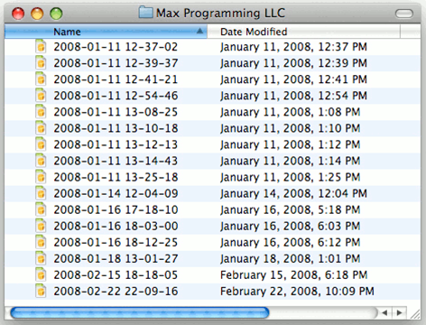

Git & git flow
via Stash
How to using git & git-flow
Ricky Jang (jcjang@hivetech.kr)
Just Do It
GIT?
Git is just one of SCM
SCM is not
always necessary
SCM by Hand & Date
Welcome to hell
Here we go, SVN
But
Use branches and tags
time goes on...
Welcome to hell, Again
Hell : "Merge"
Now GIT
Git is really cool!